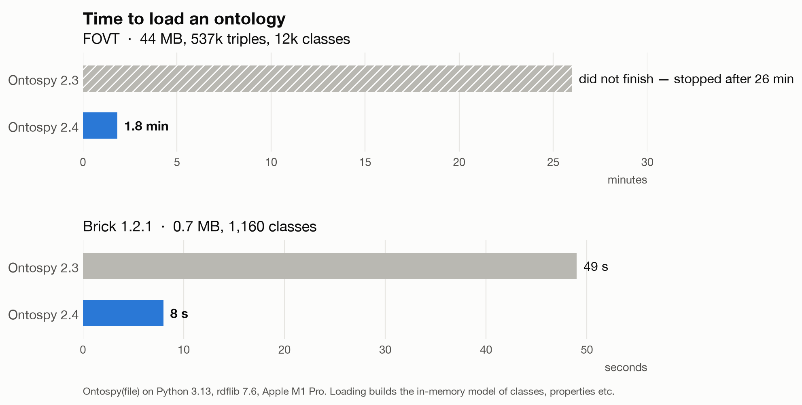

Ontospy: three releases in a day, after nearly four years of silence
Today I released three versions of Ontospy: 2.2, 2.3 and 2.4. The previous release was in November 2022.
Ontospy is the open source Python library and command line tool I've been maintaining since 2013. It reads RDF vocabularies and ontologies, lets you inspect them, and generates documentation for them as HTML, Markdown or interactive D3 charts.
A confession
I let this project go stale. Between a demanding day job and family life, Ontospy kept slipping to the bottom of the list.
Meanwhile people kept using it, and kept writing in. Bug reports, feature requests, pull requests with real work in them. The oldest open issues dated back to 2017. One pull request, a nice idea for cleaner class trees, had been waiting since 2019. By last week the library didn't even install on recent versions of Python.
That kind of backlog is heavy to look at. Each item on its own is small. Together they need days of context-switching I never had.
What changed
This time I worked through the whole lot with Claude Code. The three releases went out on a single day.
It runs again (2.2)
- Support for Python 3.12 and later, which removed an API Ontospy relied on
- A proper test suite with pytest, and continuous integration on Python 3.10 to 3.14
- Packaging fixes: dependency versions are now actually enforced on install
- A crash when documenting class instances, which had been reported three times
Community contributions (2.3, 2.4)
- Custom templates: you can now override any of the documentation templates with your own (thanks to @jgsogo)
- Better Markdown output (thanks to @rvesse and @fmeynadier)
- Namespace prefixes declared in a file now win over rdflib's defaults
- Ontospy can load an existing rdflib graph
- Non-redundant class trees for reasoned ontologies, from that 2019 pull request (thanks to @floatingpurr)
Correctness (2.4)
- Properties without a domain or range now inherit them from their superproperties, as RDFS intends, instead of showing
owl:Thing - Properties typed as a subclass of
owl:ObjectPropertyare recognised, which matters for ontologies like Brick - A property's type no longer depends on alphabetical order (Pizza's
hasBaseused to show up as anowl:FunctionalProperty)
Large ontologies (2.4)
This is the one I'm happiest about. Someone reported that Ontospy crashed on FOVT, a large biology ontology, and suggested raising Python's recursion limit. The real cause was elsewhere: the code walking class hierarchies didn't keep track of where it had been, so cycles and heavy multiple inheritance made it recurse forever.
With that fixed, FOVT went from not finishing after 26 minutes to loading in under two.

Documentation and examples
gendocsno longer wipes the output folder before writing to it- URLs in metadata are links, and
rdfs:seeAlsogets its own section - The examples site is regenerated with the new version, and its index now shows what each ontology is about
In numbers: 28 issues closed, every open pull request dealt with, 45 commits. Three issues are still open, on purpose: a licensing question, a SHACL feature that needs a contributor, and general performance on very large ontologies.
How it actually worked
It wasn't magic, and I didn't just press a button.
Claude did the legwork. It reproduced each bug before touching the code, wrote a failing test first, then the fix. It dug into causes I'd have guessed wrong: the FOVT crash wasn't where the original report, or my own notes, pointed. When a change touched the generated documentation, it rebuilt the docs before and after and compared them, to make sure nothing else moved.
I made the decisions. Should an inherited domain be shown as declared, or marked as inferred? Should the examples index be a table or a set of cards? Every change came to me as a diff before it was committed, and the public steps (merging, tagging, publishing to PyPI) stayed mine.
That split felt right. The judgement calls are the interesting part of ontology engineering anyway. The context-switching was the part I never had time for.
Back to it
Doing this reminded me how much I enjoy this kind of work: structuring knowledge, and building tools that help other people do it.
Next on the list are performance on very large ontologies, better support for Jupyter notebooks, and a cleaner documentation site. If you use Ontospy, now is a good time to open an issue. This time I promise to answer.
pip install -U ontospy
See also: the changelog, the documentation and the source code.
Update, 14 October: version 2.5
Two days later, 2.5 is out too, with a few things that came up while regenerating the examples:
- The documentation now lists only the namespaces an ontology actually uses, rather than all of rdflib's thirty or so defaults. For Pizza, that's 5 prefixes instead of 30.
- Queries to SPARQL endpoints send only the prefixes they need. On DBpedia, that cut a typical query from 29
PREFIXlines to 11. - Ontology metadata is sorted, and nested details like an ontology's editors are shown properly, instead of as cryptic node ids.
I also refreshed the examples site. It now covers 32 ontologies, adding widely used standards like PROV-O, DCAT, SKOS, GeoSPARQL and FIBO, and dropping some dated ones.